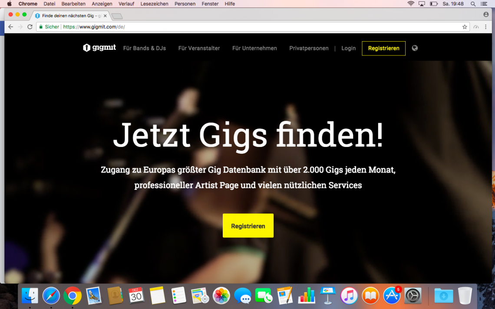

gigmit.com ist eine Plattform für Musiker und Veranstalter — Matchmaking und Marktplatz in einem. Als CMO (07/2014–03/2018) habe ich die Marketingstrategie entwickelt und anfangs zum größten Teil selbst umgesetzt.
Unter meiner Leitung stiegen die Nutzerzahlen von 4.000 auf über 65.000, der Traffic um das Fünffache — mit entsprechendem Umsatzwachstum. Ich habe das Marketing-Team von einer auf sechs Personen aufgebaut und zuletzt ein Jahresbudget von rund 200.000 € verantwortet.
30 Minuten, unverbindlich — ich schaue mir Ihre Ausgangslage an und sage ehrlich, ob und wie ich helfen kann.